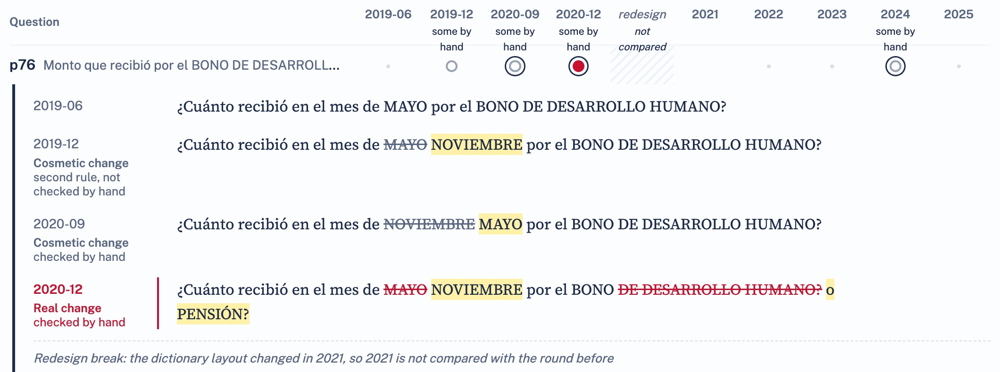

For researchers who pool ENEMDU rounds: p76 keeps its name, but the question changes.
$ uv run deriva \
..._persona_anual_2021.xlsx \
..._persona_anual_2025.xlsx
2021: 151 variables
2025: 139 variables
added 0
removed 12
cosmetic 9
real 13
unchanged 117
wrote deriva_2021_vs_2025.csv
Real output. The CSV has both wordings side by side, real changes first.

deriva-history data/: 9 rounds, June 2019 to 2025. real change at 2020-12; 2021 shown as a redesign break.
| rule: cosmetic | rule: real | |
|---|---|---|
| me: cosmetic | 9 | 10 |
| me: real | 0 | 3 |
| rule: cosmetic | rule: real | |
|---|---|---|
| me: cosmetic | 33 | 5 |
| me: real | 0 | 7 |
A number that matches the program's output is not evidence. Check it against something the program didn't produce.